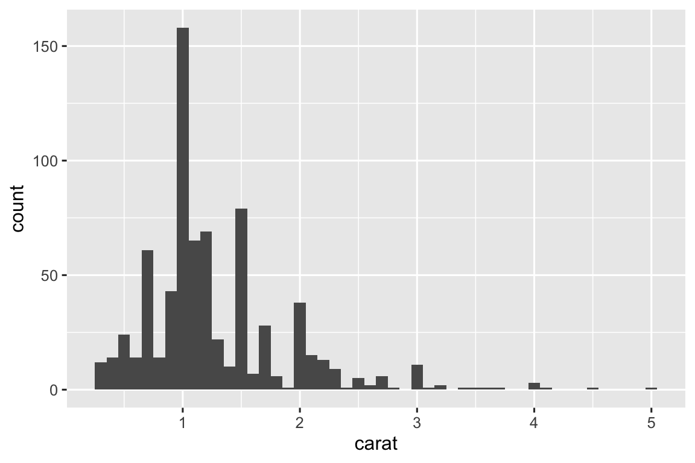

library(tidyverse)26 迭代
26.1 引言
在这一章中，你将学习到用于迭代的工具，即在不同对象上重复执行相同的操作。R 语言中的迭代通常看起来与其他编程语言有很大的不同，因为R语言中的很多迭代是隐式的，我们可以免费得到它。
例如，如果你想在R中将数值向量x翻倍，只需写2 * x即可。而 在大多数其他语言中，你可能需要使用某种形式的for循环来明确地将x的每个元素翻倍。
本书已经向你介绍了一些虽小但功能强大的工具，这些工具可以对多个“事物”执行相同的操作：
facet_wrap()和facet_grid()为每个子集绘制一个图形；group_by()加上summarize()为每个子集计算摘要统计统计量；unnest_wider()和unnest_longer()为列表列中的每个元素创建新的行和列。
现在是时候学习一些更通用的工具了，这些工具通常被称为函数式编程 (functional programming) 工具，因为它们建立在将其他函数作为输入的函数之上。学 习函数式编程可能会变得抽象化，但在本章中，我们将通过关注三个常见任务来使内容具体化：修改多个列、读取多个文件以及保存多个对象。
26.1.1 必要条件
在本章中，我们将重点关注由dplyr和purrr提供的工具，它们都是tidyverse的核心成员。你 之前已经见过dplyr，但purrr是新的。我 们本章只会使用purrr的几个函数，但随着你编程技能的提高，它是一个非常值得探索的包。
26.2 修改多列
想象一下你有一个简单的tibble，你想要计算每一列的观察值数量以及每一列的中位数。
df <- tibble(
a = rnorm(10),
b = rnorm(10),
c = rnorm(10),
d = rnorm(10)
)你可以使用复制-粘贴:
df |> summarize(
n = n(),
a = median(a),
b = median(b),
c = median(c),
d = median(d),
)
#> # A tibble: 1 × 5
#> n a b c d
#> <int> <dbl> <dbl> <dbl> <dbl>
#> 1 10 -0.246 -0.287 -0.0567 0.144这打破了我们的经验法则，即永远不要复制粘贴超过两次，你可以想象，如果你有数十甚至数百列，这将变得非常繁琐。相 反，你可以使用across():
df |> summarize(
n = n(),
across(a:d, median),
)
#> # A tibble: 1 × 5
#> n a b c d
#> <int> <dbl> <dbl> <dbl> <dbl>
#> 1 10 -0.246 -0.287 -0.0567 0.144across()函数有三个特别重要的参数，我们将在以下部分中详细讨论它们。每 次使用across()时，你都会使用前两个参数：第一个参数.cols指定你想要遍历的列，第二个参数.fns指定要对每一列执行的操作。当 你需要对输出列的名称进行额外控制时，可以使用.names参数，这在与mutate()函数一起使用across()时尤为重要。此 外，我们还将讨论两个重要的变体if_any()和if_all()，它们与filter()函数一起工作。
26.2.1 使用.cols选择列
across()函数的第一个参数.cols用于选择要进行转换的列。这 与select()函数的指定方式相同，因此你可以使用像starts_with()和ends_with()这样的函数，根据列名来选择列。
有两种额外的选择技术对于across()特别有用：everything()和where()。e verything()很简单：它选择所有（非分组）列：
df <- tibble(
grp = sample(2, 10, replace = TRUE),
a = rnorm(10),
b = rnorm(10),
c = rnorm(10),
d = rnorm(10)
)
df |>
group_by(grp) |>
summarize(across(everything(), median))
#> # A tibble: 2 × 5
#> grp a b c d
#> <int> <dbl> <dbl> <dbl> <dbl>
#> 1 1 -0.0935 -0.0163 0.363 0.364
#> 2 2 0.312 -0.0576 0.208 0.565注意，分组列（在此处为 grp）不会被包含在across()中，因为它们在summarize()中会被自动保留。
where()允许你根据列的类型来选择列：
where(is.numeric)选择所有数值列。where(is.character)选择所有字符串列。where(is.Date)选择所有日期列。where(is.POSIXct)选择所有日期时间列。where(is.logical)选择所有逻辑列。
就像其他选择器一样，你可以使用布尔代数将它们组合起来。例 如 !where(is.numeric) 选择所有非数值列，而 starts_with("a") & where(is.logical) 选择所有名称以 “a” 开头的逻辑列。
26.2.2 调用单个函数
across() 的第二个参数定义了将如何转换每一列。在 如上所述的简单例子中，这将是一个现有的函数。这 是 R 语言的一个非常特别的功能：我们将一个函数 (如 median、mean、str_flatten 等) 传递给另一个函数 (即across)。这 是使 R 成为一种函数式编程语言的特性之一。
需要注意的是，我们将这个函数传递给across()，因此是across()来调用它，我们自己不直接调用它。这 意味着函数名后面不应该有括号 ()。如 果你忘记了这一点，将会得到一个错误：
df |>
group_by(grp) |>
summarize(across(everything(), median()))
#> Error in `summarize()`:
#> ℹ In argument: `across(everything(), median())`.
#> Caused by error in `median.default()`:
#> ! argument "x" is missing, with no default出现此错误是因为你在没有输入的情况下调用函数，例如:
median()
#> Error in median.default(): argument "x" is missing, with no default26.2.3 调用多个函数
在更复杂的情况下，你可能想要提供额外的参数或执行多个转换。让 我们用一个简单的例子来说明这个问题：如果我们的数据中有一些缺失值，会发生什么？m edian()函数会传播这些缺失值，导致我们得到一个次优的输出：
rnorm_na <- function(n, n_na, mean = 0, sd = 1) {
sample(c(rnorm(n - n_na, mean = mean, sd = sd), rep(NA, n_na)))
}
df_miss <- tibble(
a = rnorm_na(5, 1),
b = rnorm_na(5, 1),
c = rnorm_na(5, 2),
d = rnorm(5)
)
df_miss |>
summarize(
across(a:d, median),
n = n()
)
#> # A tibble: 1 × 5
#> a b c d n
#> <dbl> <dbl> <dbl> <dbl> <int>
#> 1 NA NA NA 1.15 5如果我们能够将na.rm = TRUE传递给median()来移除这些缺失值，那将是非常好的。要 做到这一点，我们需要创建一个新函数，该函数以期望的参数调用median()，而不是直接调用median()。
df_miss |>
summarize(
across(a:d, function(x) median(x, na.rm = TRUE)),
n = n()
)
#> # A tibble: 1 × 5
#> a b c d n
#> <dbl> <dbl> <dbl> <dbl> <int>
#> 1 0.139 -1.11 -0.387 1.15 5这样写有些冗长，所以 R 提供了一个方便的快捷方式：对于这种一次性或匿名函数1，你可以使用\2来代替function。
df_miss |>
summarize(
across(a:d, \(x) median(x, na.rm = TRUE)),
n = n()
)在任何情况下，across()实际上都会展开为以下代码：
df_miss |>
summarize(
a = median(a, na.rm = TRUE),
b = median(b, na.rm = TRUE),
c = median(c, na.rm = TRUE),
d = median(d, na.rm = TRUE),
n = n()
)当我们从median()中移除缺失值时，知道移除了多少值会很有用。我 们可以通过向across()提供两个函数来找出这一点：一个用于计算中位数，另一个用于计算缺失值的数量。你 可以通过向.fns提供一个命名列表来提供多个函数。
df_miss |>
summarize(
across(a:d, list(
median = \(x) median(x, na.rm = TRUE),
n_miss = \(x) sum(is.na(x))
)),
n = n()
)
#> # A tibble: 1 × 9
#> a_median a_n_miss b_median b_n_miss c_median c_n_miss d_median d_n_miss
#> <dbl> <int> <dbl> <int> <dbl> <int> <dbl> <int>
#> 1 0.139 1 -1.11 1 -0.387 2 1.15 0
#> # ℹ 1 more variable: n <int>如果你仔细观察，你可能会直觉地认为列名是使用类似{.col}_{.fn}的 glue 规范(小节 14.3.2) 来命名的，其中.col是原始列的名称，.fn是函数的名称。这 并不是巧合！正 如你将在下一节中学到的，你可以使用.names参数来提供你自己的 glue 规范。
26.2.4 列名
across()函数的结果是根据.names参数中提供的规范来命名的。如 果我们想要函数的名字首先出现3，可以自己指定。
df_miss |>
summarize(
across(
a:d,
list(
median = \(x) median(x, na.rm = TRUE),
n_miss = \(x) sum(is.na(x))
),
.names = "{.fn}_{.col}"
),
n = n(),
)
#> # A tibble: 1 × 9
#> median_a n_miss_a median_b n_miss_b median_c n_miss_c median_d n_miss_d
#> <dbl> <int> <dbl> <int> <dbl> <int> <dbl> <int>
#> 1 0.139 1 -1.11 1 -0.387 2 1.15 0
#> # ℹ 1 more variable: n <int>.names参数在你使用across()与mutate()一起时特别重要。默 认情况下，across()的输出会使用与输入相同的名称。这 意味着在mutate()内部的across()会替换现有的列。例 如，在这里我们使用coalesce()来将 NA 值替换为 0：
df_miss |>
mutate(
across(a:d, \(x) coalesce(x, 0))
)
#> # A tibble: 5 × 4
#> a b c d
#> <dbl> <dbl> <dbl> <dbl>
#> 1 0.434 -1.25 0 1.60
#> 2 0 -1.43 -0.297 0.776
#> 3 -0.156 -0.980 0 1.15
#> 4 -2.61 -0.683 -0.785 2.13
#> 5 1.11 0 -0.387 0.704如果想要创建新的列，你可以使用.names参数来为输出指定新的名称：
df_miss |>
mutate(
across(a:d, \(x) coalesce(x, 0), .names = "{.col}_na_zero")
)
#> # A tibble: 5 × 8
#> a b c d a_na_zero b_na_zero c_na_zero d_na_zero
#> <dbl> <dbl> <dbl> <dbl> <dbl> <dbl> <dbl> <dbl>
#> 1 0.434 -1.25 NA 1.60 0.434 -1.25 0 1.60
#> 2 NA -1.43 -0.297 0.776 0 -1.43 -0.297 0.776
#> 3 -0.156 -0.980 NA 1.15 -0.156 -0.980 0 1.15
#> 4 -2.61 -0.683 -0.785 2.13 -2.61 -0.683 -0.785 2.13
#> 5 1.11 NA -0.387 0.704 1.11 0 -0.387 0.70426.2.5 筛选
across()非常适合与summarize()和mutate()一起使用，但是与filter()一起使用时则显得不太方便，因为你通常使用|或&来组合多个条件。显 然，across()可以帮助创建多个逻辑列，但接下来怎么做呢？因 此，dplyr 提供了across()的两个变体，分别叫做if_any()和if_all()：
# same as df_miss |> filter(is.na(a) | is.na(b) | is.na(c) | is.na(d))
df_miss |> filter(if_any(a:d, is.na))
#> # A tibble: 4 × 4
#> a b c d
#> <dbl> <dbl> <dbl> <dbl>
#> 1 0.434 -1.25 NA 1.60
#> 2 NA -1.43 -0.297 0.776
#> 3 -0.156 -0.980 NA 1.15
#> 4 1.11 NA -0.387 0.704
# same as df_miss |> filter(is.na(a) & is.na(b) & is.na(c) & is.na(d))
df_miss |> filter(if_all(a:d, is.na))
#> # A tibble: 0 × 4
#> # ℹ 4 variables: a <dbl>, b <dbl>, c <dbl>, d <dbl>26.2.6 函数中的 across()
across()在编程时特别有用，因为它允许你对多个列进行操作。例 如，Jacob Scott 使用了一个辅助函数，这个函数封装了一组lubridate函数，用于将所有日期列扩展为年、月和日列：
expand_dates <- function(df) {
df |>
mutate(
across(where(is.Date), list(year = year, month = month, day = mday))
)
}
df_date <- tibble(
name = c("Amy", "Bob"),
date = ymd(c("2009-08-03", "2010-01-16"))
)
df_date |>
expand_dates()
#> # A tibble: 2 × 5
#> name date date_year date_month date_day
#> <chr> <date> <dbl> <dbl> <int>
#> 1 Amy 2009-08-03 2009 8 3
#> 2 Bob 2010-01-16 2010 1 16across()还使得在一个参数中提供多个列变得容易，因为第一个参数使用了整齐选择，你只需要记住要拥抱这个参数，正如我们在 小节 25.3.2 所讨论的。例 如，这个函数默认会计算数字列的均数。但 是，通过提供第二个参数，你可以选择仅汇总选定的列：
summarize_means <- function(df, summary_vars = where(is.numeric)) {
df |>
summarize(
across({{ summary_vars }}, \(x) mean(x, na.rm = TRUE)),
n = n(),
.groups = "drop"
)
}
diamonds |>
group_by(cut) |>
summarize_means()
#> # A tibble: 5 × 9
#> cut carat depth table price x y z n
#> <ord> <dbl> <dbl> <dbl> <dbl> <dbl> <dbl> <dbl> <int>
#> 1 Fair 1.05 64.0 59.1 4359. 6.25 6.18 3.98 1610
#> 2 Good 0.849 62.4 58.7 3929. 5.84 5.85 3.64 4906
#> 3 Very Good 0.806 61.8 58.0 3982. 5.74 5.77 3.56 12082
#> 4 Premium 0.892 61.3 58.7 4584. 5.97 5.94 3.65 13791
#> 5 Ideal 0.703 61.7 56.0 3458. 5.51 5.52 3.40 21551
diamonds |>
group_by(cut) |>
summarize_means(c(carat, x:z))
#> # A tibble: 5 × 6
#> cut carat x y z n
#> <ord> <dbl> <dbl> <dbl> <dbl> <int>
#> 1 Fair 1.05 6.25 6.18 3.98 1610
#> 2 Good 0.849 5.84 5.85 3.64 4906
#> 3 Very Good 0.806 5.74 5.77 3.56 12082
#> 4 Premium 0.892 5.97 5.94 3.65 13791
#> 5 Ideal 0.703 5.51 5.52 3.40 2155126.2.7 与 pivot_longer() 比较
在继续之前，值得一提的是across()和pivot_longer()之间的一个有趣联系 (小节 5.3)。在 许多情况下要执行相同的计算，你首先要重塑数据，然后按组(而不是按列)执行操作。以 下面这个多函数总汇总例:
df |>
summarize(across(a:d, list(median = median, mean = mean)))
#> # A tibble: 1 × 8
#> a_median a_mean b_median b_mean c_median c_mean d_median d_mean
#> <dbl> <dbl> <dbl> <dbl> <dbl> <dbl> <dbl> <dbl>
#> 1 0.0380 0.205 -0.0163 0.0910 0.260 0.0716 0.540 0.508我们可以通过将数据重塑为长格式，然后进行汇总计算得到相同的值：
long <- df |>
pivot_longer(a:d) |>
group_by(name) |>
summarize(
median = median(value),
mean = mean(value)
)
long
#> # A tibble: 4 × 3
#> name median mean
#> <chr> <dbl> <dbl>
#> 1 a 0.0380 0.205
#> 2 b -0.0163 0.0910
#> 3 c 0.260 0.0716
#> 4 d 0.540 0.508如果你想要与across()相同的结构，你可以再次重塑:
long |>
pivot_wider(
names_from = name,
values_from = c(median, mean),
names_vary = "slowest",
names_glue = "{name}_{.value}"
)
#> # A tibble: 1 × 8
#> a_median a_mean b_median b_mean c_median c_mean d_median d_mean
#> <dbl> <dbl> <dbl> <dbl> <dbl> <dbl> <dbl> <dbl>
#> 1 0.0380 0.205 -0.0163 0.0910 0.260 0.0716 0.540 0.508了解这种技术是很有用的，因为有时你会遇到目前无法使用across()解决的问题：当有一组列，你想要同时对这些列进行计算时。例 如，假设我们的数据框同时包含值和权重，并且我们想要计算加权平均数：
df_paired <- tibble(
a_val = rnorm(10),
a_wts = runif(10),
b_val = rnorm(10),
b_wts = runif(10),
c_val = rnorm(10),
c_wts = runif(10),
d_val = rnorm(10),
d_wts = runif(10)
)目前无法使用across()4完成这个操作，但使用pivot_longer()相对来说比较直接：
df_long <- df_paired |>
pivot_longer(
everything(),
names_to = c("group", ".value"),
names_sep = "_"
)
df_long
#> # A tibble: 40 × 3
#> group val wts
#> <chr> <dbl> <dbl>
#> 1 a 0.715 0.518
#> 2 b -0.709 0.691
#> 3 c 0.718 0.216
#> 4 d -0.217 0.733
#> 5 a -1.09 0.979
#> 6 b -0.209 0.675
#> # ℹ 34 more rows
df_long |>
group_by(group) |>
summarize(mean = weighted.mean(val, wts))
#> # A tibble: 4 × 2
#> group mean
#> <chr> <dbl>
#> 1 a 0.126
#> 2 b -0.0704
#> 3 c -0.360
#> 4 d -0.248如果需要，您可以将pivot_wider()返回到原始形式。
26.2.8 练习
通过以下方式练习你的
across()技能：计算
palmerpenguins::penguins数据集中每一列的唯一值个数。计算
mtcars中每一列的均数。按
cut、clarity和color对diamonds进行分组，然后计算每个数值列的观测值个数以及均数。
如果在
across()中使用函数列表但没有为它们命名，会发生什么？输 出是如何命名的？调整
expand_dates()函数，以便在日期列被扩展后自动删除它们。你 需要拥抱任何参数吗？解释这个函数中管道的每一步都做了什么。利 用了
where()的什么特殊功能？show_missing <- function(df, group_vars, summary_vars = everything()) { df |> group_by(pick({{ group_vars }})) |> summarize( across({{ summary_vars }}, \(x) sum(is.na(x))), .groups = "drop" ) |> select(where(\(x) any(x > 0))) } nycflights13::flights |> show_missing(c(year, month, day))
26.3 读取多个文件
在上一节中，学习了如何使用dplyr::across()对多列重复进行转换。在 本节中，你将学习如何使用purrr::map()对目录中的每个文件执行某项操作。让 我们从一个简单的动机开始：假设你有一个包含大量 Excel 表格的目录5，你想要读取它们。 可以使用复制和粘贴的方式来做这件事：
data2019 <- readxl::read_excel("data/y2019.xlsx")
data2020 <- readxl::read_excel("data/y2020.xlsx")
data2021 <- readxl::read_excel("data/y2021.xlsx")
data2022 <- readxl::read_excel("data/y2022.xlsx")然后可以使用dplyr::bind_rows()将它们合并在一起：
data <- bind_rows(data2019, data2020, data2021, data2022)你可以想象，如果文件数量不是四个，而是成百上千个，那么这个过程很快就会变得繁琐。以 下部分将向你展示如何自动化此类任务。主 要有三个基本步骤：使用list.files()列出目录中的所有文件，然后使用purrr::map()将它们读入到一个列表中，接着使用purrr::list_rbind()将它们合并成一个单一的数据框。之 后，我们将讨论如何处理日益增加的异质性情况，即你不能对每个文件都执行完全相同的操作。
26.3.1 列出目录中的文件
顾名思义，list.files()会列出目录中的文件。你 总是会使用以下三个参数：
- 第一个参数
path是要查找的目录。 pattern是一个用于过滤文件名的正则表达式。最常见的模式是类似\.xlsx$或\.csv$这样的表达式，用于查找具有指定扩展名的所有文件。full.names决定是否在输出中包含目录名。你通常希望这个参数为TRUE。
为了让我们的动机示例具体化，这本书包含一个文件夹，其中包含来自gapminder包的 12 个 Excel 表格。每 个文件包含 142 个国家某一年的数据。我 们可以通过适当的list.files()调用列出所有这些文件：
paths <- list.files("data/gapminder", pattern = "[.]xlsx$", full.names = TRUE)
paths
#> [1] "data/gapminder/1952 2.xlsx" "data/gapminder/1952.xlsx"
#> [3] "data/gapminder/1957.xlsx" "data/gapminder/1962.xlsx"
#> [5] "data/gapminder/1967.xlsx" "data/gapminder/1972.xlsx"
#> [7] "data/gapminder/1977.xlsx" "data/gapminder/1982.xlsx"
#> [9] "data/gapminder/1987.xlsx" "data/gapminder/1992 2.xlsx"
#> [11] "data/gapminder/1992.xlsx" "data/gapminder/1997.xlsx"
#> [13] "data/gapminder/2002 2.xlsx" "data/gapminder/2002.xlsx"
#> [15] "data/gapminder/2007 2.xlsx" "data/gapminder/2007.xlsx"26.3.2 列表
现在我们有了 12 个路径，我们可以调用read_excel() 12 次来得到 12 个数据框：
gapminder_1952 <- readxl::read_excel("data/gapminder/1952.xlsx")
gapminder_1957 <- readxl::read_excel("data/gapminder/1957.xlsx")
gapminder_1962 <- readxl::read_excel("data/gapminder/1962.xlsx")
...,
gapminder_2007 <- readxl::read_excel("data/gapminder/2007.xlsx")但是将每个工作表放入自己的变量中将使得在后续的步骤中处理它们变得困难。相 反，如果将它们放入一个单独的对象中，处理起来将更加方便。列 表是完成这项工作的完美工具：
files <- list(
readxl::read_excel("data/gapminder/1952.xlsx"),
readxl::read_excel("data/gapminder/1957.xlsx"),
readxl::read_excel("data/gapminder/1962.xlsx"),
...,
readxl::read_excel("data/gapminder/2007.xlsx")
)既然已经将这些数据框放入了一个列表中，如何从中取出一个呢？可 以使用files[[i]]来提取第i个元素：
files[[3]]
#> # A tibble: 142 × 5
#> country continent lifeExp pop gdpPercap
#> <chr> <chr> <dbl> <dbl> <dbl>
#> 1 Afghanistan Asia 30.3 9240934 821.
#> 2 Albania Europe 59.3 1476505 1942.
#> 3 Algeria Africa 45.7 10270856 3014.
#> 4 Angola Africa 32.0 4561361 3828.
#> 5 Argentina Americas 64.4 19610538 6857.
#> 6 Australia Oceania 70.3 9712569 10950.
#> # ℹ 136 more rows我们将在 小节 27.3 中更详细地讨论 [[ 。
26.3.3 purrr::map() 和 list_rbind()
手动将这些数据框收集到一个列表中的代码基本上和逐个读取文件的代码一样繁琐。幸 运的是，我们可以使用purrr::map()来更好地利用我们的路径向量。m ap()函数与across()类似，但map()是对向量中的每个元素进行操作，而不是对数据框中的每列进行操作。m ap(x, f)是以下操作的简写：
list(
f(x[[1]]),
f(x[[2]]),
...,
f(x[[n]])
)所以可以使用map()来获取一个包含12个数据框的列表:
files <- map(paths, readxl::read_excel)
length(files)
#> [1] 16
files[[1]]
#> # A tibble: 142 × 5
#> country continent lifeExp pop gdpPercap
#> <chr> <chr> <dbl> <dbl> <dbl>
#> 1 Afghanistan Asia 28.8 8425333 779.
#> 2 Albania Europe 55.2 1282697 1601.
#> 3 Algeria Africa 43.1 9279525 2449.
#> 4 Angola Africa 30.0 4232095 3521.
#> 5 Argentina Americas 62.5 17876956 5911.
#> 6 Australia Oceania 69.1 8691212 10040.
#> # ℹ 136 more rows(这是另一种数据结构，使用str()显示时可能不会特别紧凑，因此你可能希望将其加载到 RStudio 中并使用View()来检查它。)
现在我们可以使用purrr::list_rbind()将这个数据框列表合并成一个单一的数据框：
list_rbind(files)
#> # A tibble: 2,272 × 5
#> country continent lifeExp pop gdpPercap
#> <chr> <chr> <dbl> <dbl> <dbl>
#> 1 Afghanistan Asia 28.8 8425333 779.
#> 2 Albania Europe 55.2 1282697 1601.
#> 3 Algeria Africa 43.1 9279525 2449.
#> 4 Angola Africa 30.0 4232095 3521.
#> 5 Argentina Americas 62.5 17876956 5911.
#> 6 Australia Oceania 69.1 8691212 10040.
#> # ℹ 2,266 more rows我们也可以在管道中同时进行这两步:
paths |>
map(readxl::read_excel) |>
list_rbind()如果想向read_excel()传递额外的参数怎么办？我 们可以使用与across()相同的方法。例 如，使用n_max = 1来查看数据的前几行通常很有用：
paths |>
map(\(path) readxl::read_excel(path, n_max = 1)) |>
list_rbind()
#> # A tibble: 16 × 5
#> country continent lifeExp pop gdpPercap
#> <chr> <chr> <dbl> <dbl> <dbl>
#> 1 Afghanistan Asia 28.8 8425333 779.
#> 2 Afghanistan Asia 28.8 8425333 779.
#> 3 Afghanistan Asia 30.3 9240934 821.
#> 4 Afghanistan Asia 32.0 10267083 853.
#> 5 Afghanistan Asia 34.0 11537966 836.
#> 6 Afghanistan Asia 36.1 13079460 740.
#> # ℹ 10 more rows这个很明显缺少了一些东西：没有year列，因为这个值记录在路径中，而不是单个文件中。接 下来我们将解决这个问题。
26.3.4 路径中的数据
有时，文件名本身就是数据的一部分。在 这个例子中，文件名包含了年份，而这个年份并没有在单个文件中被记录。要 将这一列添加到最终的数据框中，我们需要做两件事：
首先，我们给路径向量命名。最 简单的方法是使用set_names()，该函数可以接受一个函数。在 这里，我们使用basename()函数从完整路径中提取仅包含文件名的部分：
paths |> set_names(basename)
#> 1952 2.xlsx 1952.xlsx
#> "data/gapminder/1952 2.xlsx" "data/gapminder/1952.xlsx"
#> 1957.xlsx 1962.xlsx
#> "data/gapminder/1957.xlsx" "data/gapminder/1962.xlsx"
#> 1967.xlsx 1972.xlsx
#> "data/gapminder/1967.xlsx" "data/gapminder/1972.xlsx"
#> 1977.xlsx 1982.xlsx
#> "data/gapminder/1977.xlsx" "data/gapminder/1982.xlsx"
#> 1987.xlsx 1992 2.xlsx
#> "data/gapminder/1987.xlsx" "data/gapminder/1992 2.xlsx"
#> 1992.xlsx 1997.xlsx
#> "data/gapminder/1992.xlsx" "data/gapminder/1997.xlsx"
#> 2002 2.xlsx 2002.xlsx
#> "data/gapminder/2002 2.xlsx" "data/gapminder/2002.xlsx"
#> 2007 2.xlsx 2007.xlsx
#> "data/gapminder/2007 2.xlsx" "data/gapminder/2007.xlsx"这些名称会自动被所有map函数保留，因此数据框列表将具有相同的名称：
files <- paths |>
set_names(basename) |>
map(readxl::read_excel)这使得对map()的调用简写为:
files <- list(
"1952.xlsx" = readxl::read_excel("data/gapminder/1952.xlsx"),
"1957.xlsx" = readxl::read_excel("data/gapminder/1957.xlsx"),
"1962.xlsx" = readxl::read_excel("data/gapminder/1962.xlsx"),
...,
"2007.xlsx" = readxl::read_excel("data/gapminder/2007.xlsx")
)你也可以使用[[按名称提取元素:
files[["1962.xlsx"]]
#> # A tibble: 142 × 5
#> country continent lifeExp pop gdpPercap
#> <chr> <chr> <dbl> <dbl> <dbl>
#> 1 Afghanistan Asia 32.0 10267083 853.
#> 2 Albania Europe 64.8 1728137 2313.
#> 3 Algeria Africa 48.3 11000948 2551.
#> 4 Angola Africa 34 4826015 4269.
#> 5 Argentina Americas 65.1 21283783 7133.
#> 6 Australia Oceania 70.9 10794968 12217.
#> # ℹ 136 more rows然后，我们使用list_rbind()的names_to参数来告诉它将名称保存到一个名为year的新列中，并使用readr::parse_number()从字符串中提取数字。
paths |>
set_names(basename) |>
map(readxl::read_excel) |>
list_rbind(names_to = "year") |>
mutate(year = parse_number(year))
#> # A tibble: 2,272 × 6
#> year country continent lifeExp pop gdpPercap
#> <dbl> <chr> <chr> <dbl> <dbl> <dbl>
#> 1 1952 Afghanistan Asia 28.8 8425333 779.
#> 2 1952 Albania Europe 55.2 1282697 1601.
#> 3 1952 Algeria Africa 43.1 9279525 2449.
#> 4 1952 Angola Africa 30.0 4232095 3521.
#> 5 1952 Argentina Americas 62.5 17876956 5911.
#> 6 1952 Australia Oceania 69.1 8691212 10040.
#> # ℹ 2,266 more rows在更复杂的情况下，可能有其他变量存储在目录名中，或者文件名可能包含多个数据部分。在 这种情况下，使用set_names()（不带任何参数）来记录完整路径，然后使用tidyr::separate_wider_delim()和相关函数将它们转换为有用的列。
paths |>
set_names() |>
map(readxl::read_excel) |>
list_rbind(names_to = "year") |>
separate_wider_delim(year, delim = "/", names = c(NA, "dir", "file")) |>
separate_wider_delim(file, delim = ".", names = c("file", "ext"))
#> # A tibble: 2,272 × 8
#> dir file ext country continent lifeExp pop gdpPercap
#> <chr> <chr> <chr> <chr> <chr> <dbl> <dbl> <dbl>
#> 1 gapminder 1952 2 xlsx Afghanistan Asia 28.8 8425333 779.
#> 2 gapminder 1952 2 xlsx Albania Europe 55.2 1282697 1601.
#> 3 gapminder 1952 2 xlsx Algeria Africa 43.1 9279525 2449.
#> 4 gapminder 1952 2 xlsx Angola Africa 30.0 4232095 3521.
#> 5 gapminder 1952 2 xlsx Argentina Americas 62.5 17876956 5911.
#> 6 gapminder 1952 2 xlsx Australia Oceania 69.1 8691212 10040.
#> # ℹ 2,266 more rows26.3.5 保存工作
既然你已经完成了所有这些辛苦的工作，得到了一个整齐的数据框，现在是保存工作成果的好时机了：
gapminder <- paths |>
set_names(basename) |>
map(readxl::read_excel) |>
list_rbind(names_to = "year") |>
mutate(year = parse_number(year))
write_csv(gapminder, "gapminder.csv")当你将来再次遇到这个问题时，你可以读取一个单独的 csv 文件。对 于大型的和更丰富的数据集，使用 parquet 可能是比 .csv 更好的选择，正如在 小节 22.4 中讨论的那样。
如果你在一个项目中工作，我们建议你将执行这种数据准备工作的文件命名为类似 0-cleanup.R 的名字。文 件名中的 0 表示这应该在其他任何事情之前运行。
如果你的输入数据文件随着时间的推移而发生变化，你可能需要考虑学习一个工具，如 targets，来设置你的数据清理代码，以便在输入文件之一被修改时自动重新运行。
26.3.6 多个简单迭代
在这里，我们只是直接从磁盘加载了数据，并幸运地得到了一个整齐的数据集。在 大多数情况下，你需要做一些额外的整理工作，有两个基本选项：你可以使用一个复杂的函数进行一轮迭代，或者使用简单的函数进行多轮迭代。根 据我们的经验，大多数人首先选择一个复杂的迭代，但通常使用多个简单迭代会更好。
例如，假设你想读取一堆文件，过滤掉缺失值，进行重塑，然后合并。解 决这个问题的一个方法是编写一个函数，该函数接收一个文件并执行所有这些步骤，然后调用map()一次：
process_file <- function(path) {
df <- read_csv(path)
df |>
filter(!is.na(id)) |>
mutate(id = tolower(id)) |>
pivot_longer(jan:dec, names_to = "month")
}
paths |>
map(process_file) |>
list_rbind()或者，你可以对每个文件执行process_file()中的每个步骤：
paths |>
map(read_csv) |>
map(\(df) df |> filter(!is.na(id))) |>
map(\(df) df |> mutate(id = tolower(id))) |>
map(\(df) df |> pivot_longer(jan:dec, names_to = "month")) |>
list_rbind()我们推荐这种方法，因为它阻止你在移动到其余文件之前只关注第一个文件的正确性。通 过在整理和清洗数据时考虑所有数据，你更有可能从整体上思考，并得出更高质量的结果。
在这个特定的例子中，还有一个优化你可以做，那就是更早地将所有数据框绑定在一起。然 后，你可以依赖常规的 dplyr 行为：
paths |>
map(read_csv) |>
list_rbind() |>
filter(!is.na(id)) |>
mutate(id = tolower(id)) |>
pivot_longer(jan:dec, names_to = "month")26.3.7 异质数据
不幸的是，有时无法直接从map()转到list_rbind()，因为数据框的异质性太强，导致list_rbind()失败或产生了一个不太有用的数据框。在 这种情况下，从加载所有文件开始仍然是有用的：
files <- paths |>
map(readxl::read_excel) 然后，一个有用的策略是捕获数据框的结构，以便你可以使用数据科学技能来探索它。这 样做的一种方法是使用下面这个df_types函数6，它返回一个 tibble，其中每列对应一行：
df_types <- function(df) {
tibble(
col_name = names(df),
col_type = map_chr(df, vctrs::vec_ptype_full),
n_miss = map_int(df, \(x) sum(is.na(x)))
)
}
df_types(gapminder)
#> # A tibble: 6 × 3
#> col_name col_type n_miss
#> <chr> <chr> <int>
#> 1 year double 0
#> 2 country character 0
#> 3 continent character 0
#> 4 lifeExp double 0
#> 5 pop double 0
#> 6 gdpPercap double 0然后，你可以将这个函数应用于所有文件，并可能进行一些重塑操作，以便更容易地看到差异所在。例 如，这可以很容易地验证我们一直在使用的 gapminder 电子表格是否都是同质的：
files |>
map(df_types) |>
list_rbind(names_to = "file_name") |>
select(-n_miss) |>
pivot_wider(names_from = col_name, values_from = col_type)
#> # A tibble: 16 × 6
#> file_name country continent lifeExp pop gdpPercap
#> <chr> <chr> <chr> <chr> <chr> <chr>
#> 1 1952 2.xlsx character character double double double
#> 2 1952.xlsx character character double double double
#> 3 1957.xlsx character character double double double
#> 4 1962.xlsx character character double double double
#> 5 1967.xlsx character character double double double
#> 6 1972.xlsx character character double double double
#> # ℹ 10 more rows如果文件的格式是异构的，那么在成功合并它们之前，你可能需要进行更多的处理。不 幸的是，接下来我们将让你自己去解决这个问题，但你可能想要阅读关于map_if()和map_at()的信息。m ap_if()允许你根据列表元素的值有选择地修改它们；map_at()允许你根据元素的名称有选择地修改它们。
26.3.8 处理失败
有时，你的数据结构可能极其复杂，以至于你甚至无法使用单个命令读取所有文件。然 后你就会遇到map()的一个缺点：要么整体成功，要么整体失败。m ap()要么成功地读取目录中的所有文件，要么因为错误而失败，一个文件都读不到。这 有点烦人：为什么一个失败就阻止你获得其他成功呢？
幸运的是，purrr提供了一个辅助函数possibly()来解决这个问题。p ossibly()是一个函数操作符：它接受一个函数并返回一个行为经过修改过函数。具 体来说，possibly()会将函数从错误改为返回你指定的值。
files <- paths |>
map(possibly(\(path) readxl::read_excel(path), NULL))
data <- files |> list_rbind()这个做法在这里特别有效，因为list_rbind()（像许多 tidyverse 函数一样）会自动忽略 NULL 值。
现在你已经有了所有可以轻松读取的数据，是时候解决困难的部分了，即弄清楚为什么一些文件加载失败以及该如何处理它们。首 先，获取那些失败的文件的路径：
failed <- map_vec(files, is.null)
paths[failed]
#> character(0)然后针对每个失败的文件再次调用导入函数，并找出哪里出了问题。
26.4 保存多个输出
上一个部分学习了map()函数，它对于将多个文件读取到单个对象中非常有用。在 本部分，我们将探讨一个相反的问题：你如何能将一个或多个 R 对象保存到一个或多个文件中？我 们将通过三个例子来探索这个挑战：
- 将多个数据框保存到一个数据库中。
- 将多个数据框保存到多个
.csv文件中。 - 将多个图保存到多个
.png文件中。
26.4.1 写入数据库
有时在同时处理许多文件时，不可能将所有数据一次性加载到内存中，因此你无法使用map(files, read_csv)。处 理这个问题的一种方法是将数据加载到数据库中，这样你就可以使用dbplyr仅访问你需要的部分。
如果你很幸运，你所使用的数据库包会提供一个方便的函数，该函数接受一个路径向量并将它们全部加载到数据库中。这 就是duckdb的duckdb_read_csv()函数的情况。
con <- DBI::dbConnect(duckdb::duckdb())
duckdb::duckdb_read_csv(con, "gapminder", paths)这种方法在这里会很有效，但我们没有 csv 文件，而是 Excel 电子表格，所以必须“手动”进行。当 你有一堆csv，而你正在使用的数据库没有一个函数可以将它们全部加载进来时，学习手工操作也会对你有所帮助。
我们需要首先创建一个表来填充数据。最 简单的方法是通过创建一个模板，即一个包含我们想要的所有列但只包含样本数据的虚拟数据框。对 于 gapminder 数据，我们可以通过读取单个文件并向其添加年份来创建该模板：
template <- readxl::read_excel(paths[[1]])
template$year <- 1952
template
#> # A tibble: 142 × 6
#> country continent lifeExp pop gdpPercap year
#> <chr> <chr> <dbl> <dbl> <dbl> <dbl>
#> 1 Afghanistan Asia 28.8 8425333 779. 1952
#> 2 Albania Europe 55.2 1282697 1601. 1952
#> 3 Algeria Africa 43.1 9279525 2449. 1952
#> 4 Angola Africa 30.0 4232095 3521. 1952
#> 5 Argentina Americas 62.5 17876956 5911. 1952
#> 6 Australia Oceania 69.1 8691212 10040. 1952
#> # ℹ 136 more rows现在我们可以连接到数据库，并使用DBI::dbCreateTable()将我们的模板转换为数据库表：
con <- DBI::dbConnect(duckdb::duckdb())
DBI::dbCreateTable(con, "gapminder", template)dbCreateTable()并不使用template中的数据，而只是使用变量名和类型。所 以如果我们现在检查gapminder表，你会看到它是空的，但它具有我们需要的变量和预期的类型：
con |> tbl("gapminder")
#> # Source: table<gapminder> [0 x 6]
#> # Database: DuckDB v1.0.0 [root@Darwin 23.6.0:R 4.4.1/:memory:]
#> # ℹ 6 variables: country <chr>, continent <chr>, lifeExp <dbl>, pop <dbl>,
#> # gdpPercap <dbl>, year <dbl>接下来，我们需要一个函数，它接受一个单独的文件路径，将其读取到 R 中，并将结果添加到gapminder表中。我 们可以通过将read_excel()与DBI::dbAppendTable()结合使用来实现这一点：
append_file <- function(path) {
df <- readxl::read_excel(path)
df$year <- parse_number(basename(path))
DBI::dbAppendTable(con, "gapminder", df)
}现在我们需要对paths中的每个元素调用一次append_file()函数。这 当然可以使用map()函数来实现：
paths |> map(append_file)但是我们并不关心append_file()的输出，所以与map()相比，使用walk()稍微更合适。w alk()的功能与map()相同，但它会丢弃输出：
paths |> walk(append_file)现在我们可以看看表中是否有所有的数据:
con |>
tbl("gapminder") |>
count(year)
#> # Source: SQL [?? x 2]
#> # Database: DuckDB v1.0.0 [root@Darwin 23.6.0:R 4.4.1/:memory:]
#> year n
#> <dbl> <dbl>
#> 1 1967 142
#> 2 1977 142
#> 3 1987 142
#> 4 1952 284
#> 5 1957 142
#> 6 1962 142
#> # ℹ more rows26.4.2 编写csv文件
如果我们想要编写多个 csv 文件 (每个组一个) , 那么同样的基本原则也适用。让 我们想象一下，我们想要获取ggplot2::diamonds数据，并为每种clarity保存一个 csv 文件。首 先，我们需要创建这些单独的数据集。可 以通过多种方式做到这一点，但有一种我们特别喜欢的方法：group_nest()。
by_clarity <- diamonds |>
group_nest(clarity)
by_clarity
#> # A tibble: 8 × 2
#> clarity data
#> <ord> <list<tibble[,9]>>
#> 1 I1 [741 × 9]
#> 2 SI2 [9,194 × 9]
#> 3 SI1 [13,065 × 9]
#> 4 VS2 [12,258 × 9]
#> 5 VS1 [8,171 × 9]
#> 6 VVS2 [5,066 × 9]
#> # ℹ 2 more rows这会提供给我们一个新的tibble ，它有八行两列。c larity是我们的分组变量，而data是一个列表列，它包含每个clarity值对应的一个数据框：
by_clarity$data[[1]]
#> # A tibble: 741 × 9
#> carat cut color depth table price x y z
#> <dbl> <ord> <ord> <dbl> <dbl> <int> <dbl> <dbl> <dbl>
#> 1 0.32 Premium E 60.9 58 345 4.38 4.42 2.68
#> 2 1.17 Very Good J 60.2 61 2774 6.83 6.9 4.13
#> 3 1.01 Premium F 61.8 60 2781 6.39 6.36 3.94
#> 4 1.01 Fair E 64.5 58 2788 6.29 6.21 4.03
#> 5 0.96 Ideal F 60.7 55 2801 6.37 6.41 3.88
#> 6 1.04 Premium G 62.2 58 2801 6.46 6.41 4
#> # ℹ 735 more rows在这里，让我们使用mutate()和str_glue()创建一个列来给出输出文件的名称：
by_clarity <- by_clarity |>
mutate(path = str_glue("diamonds-{clarity}.csv"))
by_clarity
#> # A tibble: 8 × 3
#> clarity data path
#> <ord> <list<tibble[,9]>> <glue>
#> 1 I1 [741 × 9] diamonds-I1.csv
#> 2 SI2 [9,194 × 9] diamonds-SI2.csv
#> 3 SI1 [13,065 × 9] diamonds-SI1.csv
#> 4 VS2 [12,258 × 9] diamonds-VS2.csv
#> 5 VS1 [8,171 × 9] diamonds-VS1.csv
#> 6 VVS2 [5,066 × 9] diamonds-VVS2.csv
#> # ℹ 2 more rows所以，如果要手工保存这些数据框，我们可以这样写:
write_csv(by_clarity$data[[1]], by_clarity$path[[1]])
write_csv(by_clarity$data[[2]], by_clarity$path[[2]])
write_csv(by_clarity$data[[3]], by_clarity$path[[3]])
...
write_csv(by_clarity$by_clarity[[8]], by_clarity$path[[8]])这与我们之前使用map()的情况略有不同，因为有两个参数在变化，而不仅仅是一个。这 意味着我们需要一个新函数map2()，它同时改变第一和第二个参数。因 为我们同样不关心输出，所以想要使用walk2()而不是map2()。这 给了我们：
walk2(by_clarity$data, by_clarity$path, write_csv)26.4.3 保存图形
我们可以采用相同的基本方法来创建许多图形。让 我们首先创建一个函数来绘制我们想要的图形:
carat_histogram <- function(df) {
ggplot(df, aes(x = carat)) + geom_histogram(binwidth = 0.1)
}
carat_histogram(by_clarity$data[[1]])
现在我们可以使用map()来创建一个包含多个图形7及其最终文件路径的列表：
by_clarity <- by_clarity |>
mutate(
plot = map(data, carat_histogram),
path = str_glue("clarity-{clarity}.png")
)然后使用walk2()和ggsave()来保存每个图形:
walk2(
by_clarity$path,
by_clarity$plot,
\(path, plot) ggsave(path, plot, width = 6, height = 6)
)这是以下内容的简写:
ggsave(by_clarity$path[[1]], by_clarity$plot[[1]], width = 6, height = 6)
ggsave(by_clarity$path[[2]], by_clarity$plot[[2]], width = 6, height = 6)
ggsave(by_clarity$path[[3]], by_clarity$plot[[3]], width = 6, height = 6)
...
ggsave(by_clarity$path[[8]], by_clarity$plot[[8]], width = 6, height = 6)26.5 小结
在这一章中，你已经看到了如何使用显式迭代来解决在数据科学中经常遇到的三个问题：操作多个列、读取多个文件以及保存多个输出。但 一般来说，迭代是一种超能力：如果你知道正确的迭代方法，可以很容易地从解决一个问题转变为解决所有问题。一 旦你掌握了本章中的技术，我们强烈推荐你通过阅读《Advanced R》的 Functionals chapter 并查阅 purrr website 来进一步学习。
如果你对其他语言中的迭代有所了解，可能会惊讶于我们没有讨论 for 循环。这 是因为 R 的数据分析导向改变了我们迭代的方式：在大多数情况下，你可以依靠现有的习惯用法来对每个列或每个组执行某些操作。而 当你不能这样做时，你通常可以使用像map()这样的函数式编程工具来对列表中的每个元素执行某些操作。然 而，你将在原始代码中看到 for 循环，因此你将在下一章中学习它们，届时我们将讨论一些重要的基础 R 工具。
匿名，是因为我们从未用
<-明确给它一个名称。程 序员用来称呼这种函数的另一个术语是“lambda 函数”。↩︎在旧版本的代码中，你可能会看到像
~ .x + 1这样的语法。这 是编写匿名函数的另一种方式，但它只能在 tidyverse 函数内部使用，并且总是使用变量名.x。现 在我们推荐使用基础语法，即\(x) x + 1。↩︎当前不能更改列的顺序，但可以在事后使用
relocate()或类似的方法重新排序。↩︎也许有一天会有，但目前我们还不知道如何实现。↩︎
我们不会解释这个函数是如何工作的，但如果你查看所使用的函数的文档，应该能够自己弄清楚。↩︎
你可以输出
by_clarity$plot来得到一个粗略的动画——你会得到plots中每个元素的一个图形。注 意：这种情况并没有发生在我身上。↩︎